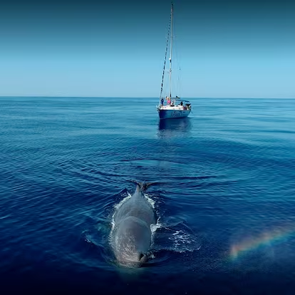

donde respira el mar...
20,81€
Inspirado en la fuerza del cachalote, Cauda es un portador de incienso que une el incienso con el mar. Cada pieza está diseñada para reflejar la belleza del cachalote y recordar la importancia de su protección.
Cauda nace de la preocupación por el océano y el cachalote. Su diseño resalta la importancia del mundo marino y sus especies. En especial, se enfoca en el cachalote, históricamente explotado por su ámbar gris en la industria del perfume, como en Chanel Nº5. Esta explotación aumentó su mortalidad, llevándolo hoy a un estado vulnerable que exige protección.
Debido a la gran importancia que contiene este animal en el océano, Cauda trata de ayudar a la protección de este mismo. Es por ello que con la compra de un portador Cauda 5€ de su precio irán destinados a la asociación “Tursiops”,ya que protege a los cachalotes en el Mediterráneo mediante investigación científica, seguimiento con drones y dispositivos acústicos, y campañas para declarar zonas de cría como áreas protegidas. También promueve la concienciación y permite colaborar como voluntario o con donaciones.
